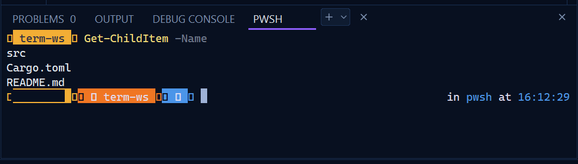
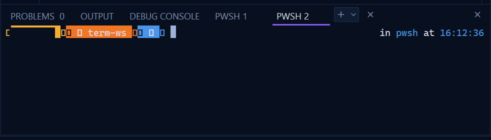

Above is a screenshot of the bottom panel today (your user name in the prompt is covered). Below is the proposed panel, drawn at the same 125% scale and size in LightLine's colours, laid out like VS Code's: one TERMINAL tab, a list of shells at the side once there are two, a compact toolbar, and a prompt whose powerline arrows and icons draw properly instead of as boxes.
TodayOne shell, then two (each shell is another tab in the strip)


Hover the tabs, buttons and shells.
ProposedSame scale and size
What changes
One TERMINAL tab. Shells no longer each add a tab to the strip beside PROBLEMS, OUTPUT and DEBUG CONSOLE ("PWSH 1", "PWSH 2"…), which ran out of room after a few. The strip always has four tabs, in VS Code's 11 px capitals, with a thin accent line under the open one. PROBLEMS shows its count as a small badge.
A list of shells at the side once there are two or more, as in VS Code: each with its shell's icon (PowerShell, Command Prompt, Git Bash, WSL) and name. The open one is highlighted; pointing at one shows a 🗑 to close it; a double-click renames it (the right-click Rename still works). With one shell the list is hidden and the terminal gets the whole width.
A compact toolbar on the right:+ new terminal, joined to ▾ for the profile menu, 🗑 kill, ^ maximize the panel (new; again to restore), ✕ close. Today the + ▾ sit in a bordered box, and the kill and close buttons are two identical ✕ symbols.
The profile menu lists PowerShell, Command Prompt, Git Bash and WSL with their icons, marks the default, and ends with Select Default Profile…, all in the same themed menu as the rest of LightLine.
Powerline prompts draw properly. The arrows between prompt segments (U+E0B0–E0B7) are drawn by LightLine as shapes sized to the cell, the way Windows Terminal does, so they join seamlessly with no special font. Other prompt icons (git branch, folder, OS logo) come from a Nerd Font when one is installed (this PC has Adwaita Mono Nerd Font). A new terminalFontFamily setting picks one, like VS Code's.
When a shell exits, a muted line in the terminal says so (pwsh exited with code 1. Press Enter to close.) and its row in the list turns muted with the code. Today the status sits in the tab strip.
OUTPUT shows what's running at the right of the strip (● Running main.rs) with ■ Stop beside it.
More room for text: 20 px on the left like VS Code, and the block caret is a quieter grey-blue.
Speed
Nothing new runs. ConPTY, the shells and the vt100 model are unchanged; this is layout and drawing.
Powerline shapes come from the icon atlas, rasterized once per cell size, so a prompt full of arrows costs about the same as text.
The Nerd Font is looked up once, the first time a terminal shows a private-use glyph, never at startup. Text without those glyphs draws exactly as today.
The shell list redraws only itself when shells are added, closed or renamed. Typing in the terminal still repaints only the rows that changed. Idle stays at 0 wakeups.
Open questions
Split terminals (two shells side by side) would be new work, so they're left for later. OK?
Maximize takes the panel to the editor's full height. Keep the panel's last height to come back to (as drawn)?